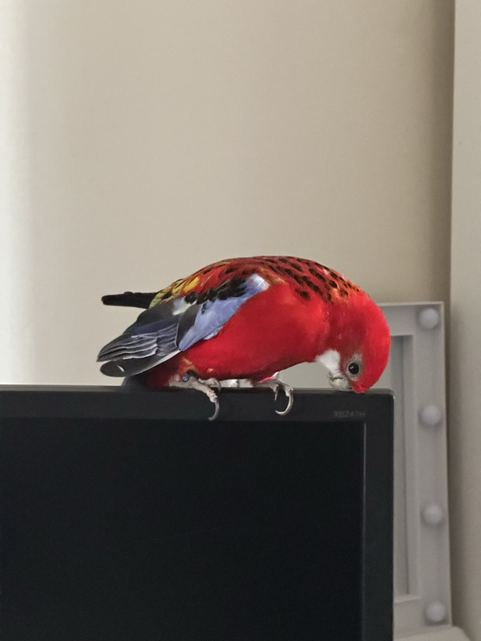

Browse ↑↓⏎
Every run: its phase, progress and why it failed.
A keyboard-first terminal UI for Argo Workflows
Every run: its phase, progress and why it failed.
A timeline of the run, and a plain-words account of what went wrong.
Logs labelled by step, and Kubernetes events as they happen.
Resume, retry, stop or delete. Each one asks first, and none is retried.
The phase is a glyph, a word and a colour, so it reads without colour too. Progress is a bar. The reason a run failed sits right in its row.
Suspended runs sort first, so a gate waiting for you is the first thing you see.
Pods and approval gates are bars coloured by phase. DAG, Steps and Retry nodes bracket the time their children took, and a running workflow ends at a now line.
Nodes marked ◆ are the critical path: the chain that set the end time. Shading before a bar is time spent waiting.
Findings come from what the workflow records and nothing else. No network service, no model, the same answer every time.
For a failed pod micko reads the end of its log and quotes the lines that matter: the error, the traceback, the line before. Then it says what to do next.
Steps sit under their Steps node in order. DAG tasks come in dependency order with what each waits for. Retry attempts nest under their Retry node with exit codes, and the exit handler gets a tree of its own.
A workflow's logs mix every pod, so each line starts with the step that wrote it. Search, filter like less, or pipe what you have to lnav.
Kubernetes events about the workflow and its pods stream in while the section is open.
Filters as you type. A plain word matches names; the rest narrows by what you know about the run.
| etl|report | either name |
| !etl | not this one |
| ~ddp | fuzzy |
| /^demo-.*$/ | a regular expression |
| dur>10m | run time |
| label:team=data | a label |
| cron=etl-hourly | started by this CronWorkflow |
: opens the palette on every screen. Commands rank as you type and tab completes. A word that names no command is reported, never guessed.
:cron lists CronWorkflows with their next run, computed the way the controller does it, time zones and daylight saving included. :tmpl, :cwftmpl and :aw list templates and the archive.
Mark rows with space and press a. The menu counts how many runs each verb applies to. Requests go one at a time, each checked again just before it is sent and never retried.
Terminate asks you to type the name. Delete asks twice. --read-only turns actions off for a session.
One profile per cluster in ~/.config/micko/config.yaml. Give each its own skin and you will never mistake prod for dev.
caFile for a private CAmicko talks to the same Argo Server as the web UI and shows the same workflows. o opens the one you are on in the Argo UI when the profile sets webURL.
:all, narrowed by a queryOr --skin auto picks dark or light from your terminal. NO_COLOR works too; colour never carries meaning on its own.

micko is named after my bird Mićko, diminutive for Milan, and he lives in the app too. He's off by default. --mascot perches him on top of the pane, where he blinks, dozes and looks around. --mascot=floor sits him in the corner, where now and then he hops over to kiss himself in his mirror. He's already a big narcissist as it is, this might push him over the top :)
micko --demo runs on synthetic data, with no cluster, no credentials and no writes.
Tested live against Argo Workflows v4.1.2.
$ brew install ficaa1/tap/micko
$ mise use -g github:ficaa1/micko
$ go install github.com/ficaa1/micko/cmd/micko@latest
Needs Go 1.25 or later.